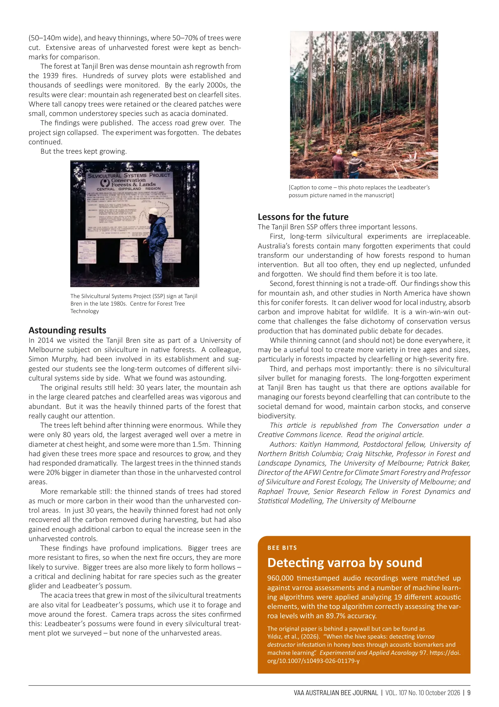

VAA AUSTRALIAN BEE JOURNAL | VOL. 107 No. 10 October 2026 | 9
(50–140m wide), and heavy thinnings, where 50–70% of trees were
cut. Extensive areas of unharvested forest were kept as bench-
marks for comparison.
The forest at Tanjil Bren was dense mountain ash regrowth from
the 1939 fires. Hundreds of survey plots were established and
thousands of seedlings were monitored. By the early 2000s, the
results were clear: mountain ash regenerated best on clearfell sites.
Where tall canopy trees were retained or the cleared patches were
small, common understorey species such as acacia dominated.
The findings were published. The access road grew over. The
project sign collapsed. The experiment was forgotten. The debates
continued.
But the trees kept growing.
The Silvicultural Systems Project (SSP) sign at Tanjil
Bren in the late 1980s. Centre for Forest Tree
Technology
Astounding results
In 2014 we visited the Tanjil Bren site as part of a University of
Melbourne subject on silviculture in native forests. A colleague,
Simon Murphy, had been involved in its establishment and sug-
gested our students see the long-term outcomes of different silvi-
cultural systems side by side. What we found was astounding.
The original results still held: 30 years later, the mountain ash
in the large cleared patches and clearfelled areas was vigorous and
abundant. But it was the heavily thinned parts of the forest that
really caught our attention.
The trees left behind after thinning were enormous. While they
were only 80 years old, the largest averaged well over a metre in
diameter at chest height, and some were more than 1.5m. Thinning
had given these trees more space and resources to grow, and they
had responded dramatically. The largest trees in the thinned stands
were 20% bigger in diameter than those in the unharvested control
areas.
More remarkable still: the thinned stands of trees had stored
as much or more carbon in their wood than the unharvested con-
trol areas. In just 30 years, the heavily thinned forest had not only
recovered all the carbon removed during harvesting, but had also
gained enough additional carbon to equal the increase seen in the
unharvested controls.
These findings have profound implications. Bigger trees are
more resistant to fires, so when the next fire occurs, they are more
likely to survive. Bigger trees are also more likely to form hollows –
a critical and declining habitat for rare species such as the greater
glider and Leadbeater’s possum.
The acacia trees that grew in most of the silvicultural treatments
are also vital for Leadbeater’s possums, which use it to forage and
move around the forest. Camera traps across the sites confirmed
this: Leadbeater’s possums were found in every silvicultural treat-
ment plot we surveyed – but none of the unharvested areas.
[Caption to come – this photo replaces the Leadbeater’s
possum picture named in the manuscript]
Lessons for the future
The Tanjil Bren SSP offers three important lessons.
First, long-term silvicultural experiments are irreplaceable.
Australia’s forests contain many forgotten experiments that could
transform our understanding of how forests respond to human
intervention. But all too often, they end up neglected, unfunded
and forgotten. We should find them before it is too late.
Second, forest thinning is not a trade-off. Our findings show this
for mountain ash, and other studies in North America have shown
this for conifer forests. It can deliver wood for local industry, absorb
carbon and improve habitat for wildlife. It is a win-win-win out-
come that challenges the false dichotomy of conservation versus
production that has dominated public debate for decades.
While thinning cannot (and should not) be done everywhere, it
may be a useful tool to create more variety in tree ages and sizes,
particularly in forests impacted by clearfelling or high-severity fire.
Third, and perhaps most importantly: there is no silvicultural
silver bullet for managing forests. The long-forgotten experiment
at Tanjil Bren has taught us that there are options available for
managing our forests beyond clearfelling that can contribute to the
societal demand for wood, maintain carbon stocks, and conserve
biodiversity.
This article is republished from The Conversation under a
Creative Commons licence. Read the original article.
Authors: Kaitlyn Hammond, Postdoctoral fellow, University of
Northern British Columbia; Craig Nitschke, Professor in Forest and
Landscape Dynamics, The University of Melbourne; Patrick Baker,
Director of the AFWI Centre for Climate Smart Forestry and Professor
of Silviculture and Forest Ecology, The University of Melbourne; and
Raphael Trouve, Senior Research Fellow in Forest Dynamics and
Statistical Modelling, The University of Melbourne
BEE BITS
Detecting varroa by sound
960,000 timestamped audio recordings were matched up
against varroa assessments and a number of machine learn-
ing algorithms were applied analyzing 19 different acoustic
elements, with the top algorithm correctly assessing the var-
roa levels with an 89.7% accuracy.
The original paper is behind a paywall but can be found as
Yıldız, et al., (2026). “When the hive speaks: detecting Varroa
destructor infestation in honey bees through acoustic biomarkers and
machine learning.” Experimental and Applied Acarology 97. https://doi.
org/10.1007/s10493-026-01179-y